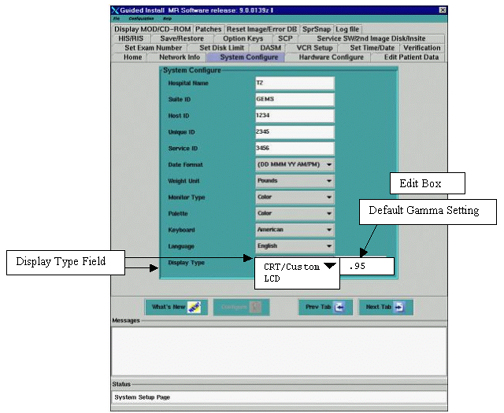
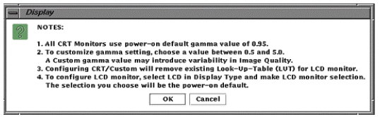

Operating Documentation
Direction 5133315-3, Rev# 14
Signa EXCITE HD 1.5T Service Methods
Module Version 1.0, Version Date 5/3/07
Operating Documentation |
| Required Persons | Preliminary Reqs | Procedure | Finalization |
|---|---|---|---|
| 1 |
The GAMMA value is modified to optimize the contrast level of the image mid-tones to more closely represent the same contrast that is filmed.
| NOTE: | READ THIS ENTIRE SECTION BEFORE PROCEEDING. IF THE WRONG GAMMA TOOLS OR SETTINGS ARE USED, IT MAY DESTROY SIGNA SOFTWARE OR RESULT IN EXTREMELY POOR IMAGE QUALITY. |
Gamma Configuration For all SGI Computers on Signa LX systems: Setting Default Gamma- Software 10.X – Unlisted CRT or LCD Monitor
This option is used to configure an LCD model, which is NOT present in the Dropdown List.
To set gamma:
If you are replacing the same model and make of CRT or LCD and have not reloaded software: No gamma changes are necessary. Proceed to Subsection 6 -Setting Default Contrast and Brightness for the LCD Monitor.
If you are replacing the same model and make of CRT or LCD and have reloaded software: Proceed to Step 2 below:
If you are Replacing a model and make of CRT or LCD that has no specific procedure: Proceed to Step 2 below:
If you Reloading software or Loading software for the first time and the CRT or LCD on the system has no specific procedure: Proceed to Step 2 below:
Open Guided Install and select [System Configure tab]. Refer to Illustration 1.
Look for the “Display Type” field. (See Illustration 1)
Illustration 1: INSTALL GUI “SYSTEM CONFIGURE” TAB- DISPLAY TYPE FIELD

| NOTE: | The “Display Type” Field has two choices:
|
| NOTE: | It may be necessary to “Toggle” between the “LCD” and “CRT/Custom” options in the Display Type Field to select “CRT/Custom”. |
If “LCD” is displayed in the Field:
Click on the Display Type Field 
Select [CRT/Custom].
A Popup Display message will appear, Select [OK] (See Illustration 2)
The Field should change to [CRT/Custom] and the cursor should be in the “Edit box”.
Start with the default value of .95. If the customer does not like this value, enter the desired gamma value in the “Edit box” to the right, and <Enter>.
| NOTE: | A Higher number will increase Brightness & Contrast; A lower number will decrease Brightness & Contrast. The Gamma Value of any LCD is highly dependent on the LCD and Display hardware as well as the Customers eye. This can vary a great deal from site to site. |
Click on the [Configure] Button on the Install GUI to save the changes. If you changed the gamma value you will see a slight change in the screen intensity when “Configure” is complete.
A Popup message box will appear, Select [OK].
Select [File] and [Exit] and [OK] from the Install/Reconfigure GUI Window.
Reboot the System. A reboot is required to activate the changes.
Proceed to Section 6- Setting Default Contrast and Brightness for the LCD Monitor.
If “CRT/Custom” is displayed in the Field:
It is recommended that you use the default value of .95. If the customer does not like this value, enter the desired gamma value in the “Edit box” to the right and <Enter>.
A Popup Display message will appear, Select [OK] (See Illustration 2)
Click on the [Configure] Button on the Install GUI to save the changes. If you changed the gamma value you will see a slight change in the screen intensity when “Configure” is complete.
A Popup message box will appear, Select [OK].
Select [File] and [Exit] and [OK] from the Install/Reconfigure GUI Window.
Reboot the System. A reboot is required to activate the changes. This completes the Gamma Calibration process.
Proceed to Section 6- Setting Default Contrast and Brightness for the LCD Monitor.
Illustration 2: MESSAGE BOX

No finalization steps.